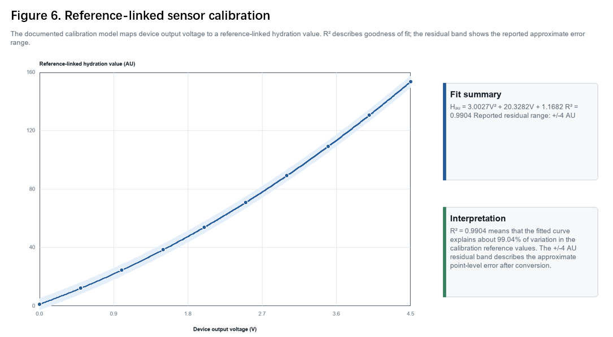
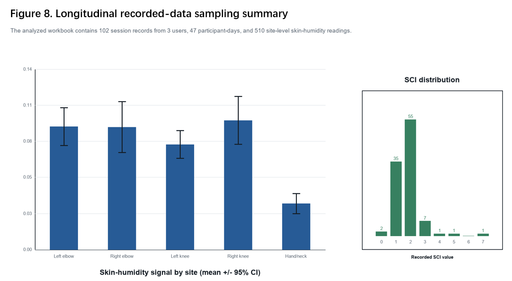
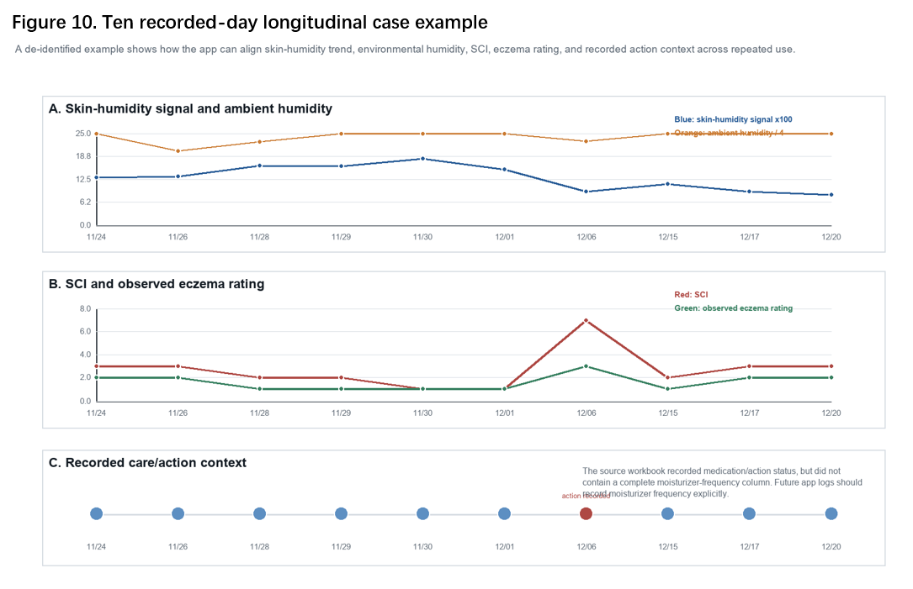

TESTING
What we tested—and what the results do not prove
Phase 1 testing looks at engineering feasibility and how the workflow behaves. It does not establish clinical equivalence, treatment benefit, causality, or health outcomes.
WHAT PHASE 1 CAN SUPPORT
Engineering feasibility observations
- An integrated end-to-end recording workflow was implemented.
- Calibration states and repeated sessions exposed measurement-condition effects.
- Small-scale longitudinal use helped identify workflow and interpretation gaps.
- The redesign established a stronger basis for expanded user data collection.
WHAT PHASE 1 CANNOT SUPPORT
Clinical or outcome claims
- No clinical equivalence
- No diagnostic performance claim
- No causality or treatment benefit
- No flare or health-outcome prediction
- No completed personalization validation
TESTING FIGURES
Selected results from Phase 1 testing
The figures below show calibration, sampling behavior, and longitudinal observations. They support feasibility analysis within the stated small-sample limits; they do not establish clinical performance.



DATA-QUALITY CONDITIONS
Why measurement protocol matters
Testing showed that readings are only useful for comparison when measurement conditions are recorded and controlled well enough to interpret variation.
Position
Measurements from different skin locations may not be directly comparable.
Contact & pressure
Sensor contact and handling can affect repeatability.
Environment
Ambient temperature and humidity provide important context.
Timing & routine
Timing, recent activity, and care routines can influence interpretation.
IMAGE-AI LIMITATIONS
Prototype labels are not dermatologist-verified
The public image dataset and labeling workflow support prototype model development, not clinical diagnosis. Representation, class balance, label quality, and generalizability remain important limitations.
See AI contribution roles →Phase 2 evidence priority
Collect a substantially larger longitudinal user-use dataset under improved data-quality controls, then evaluate individual baselines, personalization hypotheses, function understandability, and weather context.
Expanded user-use data will be treated as product and engineering validation—not automatically as clinical research.